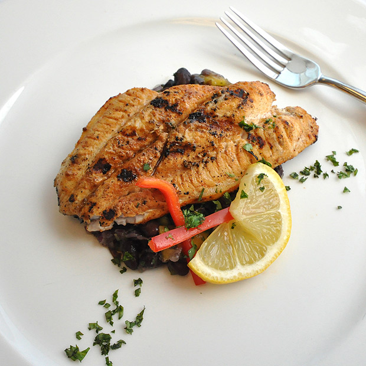

GRILLED CATFISH
{
Go on down the bayou with this zesty grilled catfish, seasoned with the flavors of Cajun country. Worcestershire sauce lends a tangy flair to this comfort food, and if you want to round out the dish perfectly, you'll give it a squeeze of fresh lemon before you pop the first warm bite in your mouth.
}
SERVES
10 People
READY
in 20 Minutes
INGREDIENTS
- 4 pounds - Catfish fillets, bones removed, cut into 5-ounce portions
- 6 ounces - Salad oil
- To taste - Cajun spices
- As needed - Worcestershire sauce
- To taste - Salt
- To taste - White pepper, ground
- 3 each - Lemons, cut into wedges
- 10 sprigs - Parsley, fresh, washed
PREPARATION
- Gather all the ingredients and equipment.
- Rub the catfish fillets with oil, and season with the Cajun spices, Worcestershire sauce, salt, and pepper.
- Grill the fillets until golden brown and firm to the touch. Hold at 135°F (57°C) or higher.
- Place the fish on warm plates, and serve with lemon wedges and parsley sprigs.
This recipe was taken from the Johnson & Wales University Recipe Library.